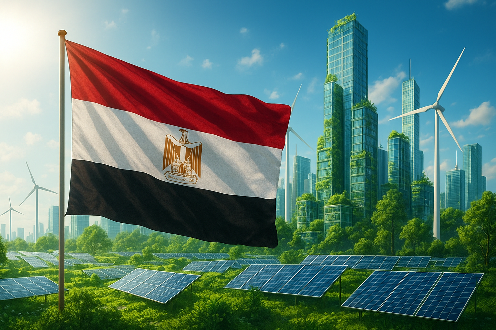
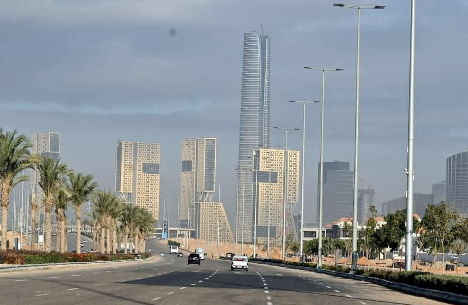

مصر 2030

مرحبًا بكم في موقع إنجازات خضراء، حيث نحتفل بالجهود المبذولة لتحقيق التنمية المستدامة وحماية البيئة في مصر. يهدف هذا الموقع إلى تسليط الضوء على المبادرات والمشاريع التي تساهم في خلق مستقبل أكثر اخضرارًا لأجيالنا القادمة.
الإنجازات

العاصمة الإدارية الجديدة
تمثل العاصمة الإدارية الجديدة نموذجًا للتخطيط الحضري المستدام، حيث تم دمج المساحات الخضراء والتقنيات البيئية الحديثة لتقليل البصمة الكربونية وتعزيز جودة الحياة للمقيمين. كما إنها من المدن الخضراء بمصر, حيث تضم النهر الأخضر, المدينة الذكية, و القطار الكهربائي.

المتحف المصري الكبير
يعد المتحف المصري الكبير مثالًا على التصميم المستدام في المباني الثقافية. تم استخدام مواد بناء صديقة للبيئة وتقنيات توفير الطاقة لتقليل التأثير البيئي للمتحف، مما يعكس التزام مصر بالحفاظ على تراثها الثقافي بطريقة مستدامة, كم يعد أكبر متحف لعرض آثار الحضارة الفرعونية على مستوى العالم. كما حصل على تقرير معتمد دوليًا لقياس انبعاثاته الكربونية عن عام 2024.
المونوريل الكهربائي
يعتبر المونوريل الكهربائي وسيلة نقل حضرية صديقة للبيئة، حيث يساهم في تقليل الازدحام المروري وانبعاثات الكربون في المدن الكبرى. باستخدام الطاقة الكهربائية النظيفة، يوفر المونوريل خيارًا مستدامًا للتنقل اليومي للمواطنين والزوار على حد سواء.يمتد المونوريل من العاصمة الإدارية الجديدة حتى مدينة السادس من أكتوبر.
الإسكان الأخضر
تعتبر مبادرات الإسكان الأخضر جزءًا أساسيًا من جهود مصر لتحقيق التنمية المستدامة. من خلال تصميم وبناء منازل تستخدم مواد بناء صديقة للبيئة وتقنيات توفير الطاقة، تسعى هذه المبادرات إلى تقليل استهلاك الموارد الطبيعية وتحسين جودة الحياة للسكان. كما تهدف إلى خلق مجتمعات سكنية مستدامة تعزز من الوعي البيئي والمسؤولية الاجتماعية; مما يوفر في الطاقة ويسهم في إرشاد استهلاك الماء و الكهرباء.

محطة عدلي منصور التبادلية
. تم تصميم المحطة لتكون مركزًا متعدد الوسائط يربط بين وسائل النقل المختلفة مثل الخط الثالث للمترو "الخط الأخضر" والقطار الكهربائي السريع, و الأتوبيس الترددي. مما يسهل التنقل ويقلل من الاعتماد على السيارات الخاصة، وبالتالي يساهم في تقليل الازدحام المروري وانبعاثات الكربون في المدينة., ولا سيما ان وسائل النقل الثلاثة صديقة للبيئة.